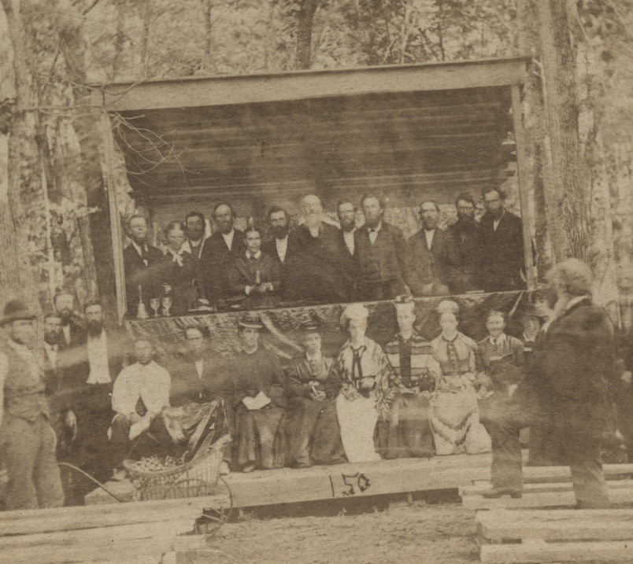
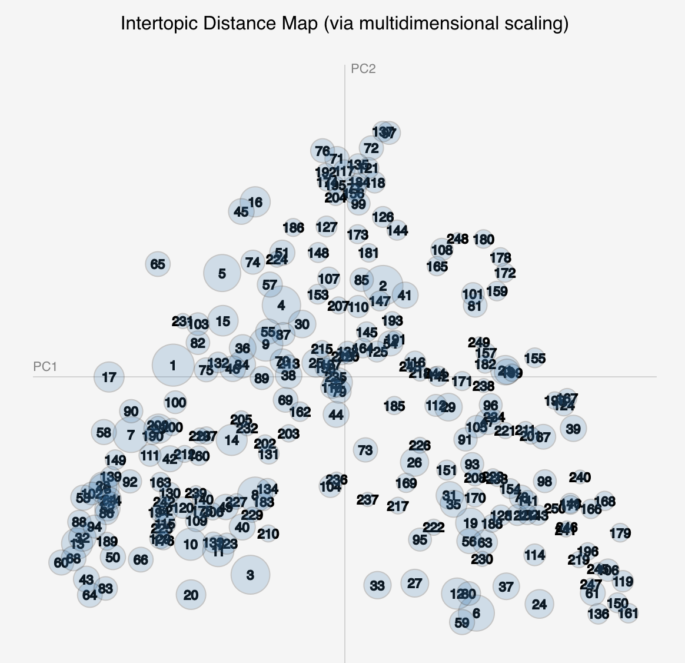

A Gospel of Health and Salvation
Modeling the Religious Culture of Seventh-day Adventism, 1843 - 1920
A Dissertation
Submitted to the
Graduate Faculty
of
George Mason University
in Partial Fulfillment of
the Requirements for the Degree
of
Doctor of Philosophy
History
Completed Summer 2019
By Jeri E. Wieringa
Abstract
Structure of the Dissertation
The dissertation is designed so that readers can focus on areas of interest, while interlinking between the pages connects the different components of the project. The opening navigation outlines the two tracks through the dissertation. Additionally, the top navigation provides access to each of the different components of the dissertation.
- The model browser provides access to the topic model at the center of this project.
- The essays, along with the introduction and conclusion, contain the main written components of the project.
- The notebooks provide access to the code and data used in my analysis.
- The about pages includes the project bibliography and process statement.
The project site and component elements are archived in the George Mason University Libraries’ Archival Repository, as well as in the WayBack Machine. Additionally, the source code for the components is available on Github.
Track 1: Ellen White and Gender in Seventh-day Adventism

For readers interested primarily in my engagement with Ellen White and the gender history of Seventh-day Adventism, these essays explore the relationship between Seventh-day Adventism’s beliefs about time and the culture of the movement. I argue that end-times expectation made possible the ongoing leadership of Ellen White and shaped the gender dynamics of the denomination.
Track 2: Computational Methods in History

For readers interested in my methodological argument regarding the use of computational methods in history, these essays explore the possibilities and limitations of applying computational text analysis to historical inquiry. I argue for the careful consideration of the match between method and data, for the publication of methods as part of the scholarly output of such work, and for a more thorough study of the limitations that historical content place of the effectiveness of current processing algorithms.